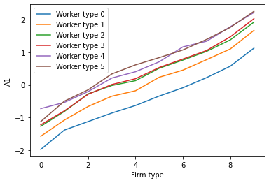

BLM example¶
[1]:
# Add pytwoway to system path, do not run this
# import sys
# sys.path.append('../../..')
[2]:
# Import the pytwoway package
# (Make sure you have installed it using pip install pytwoway)
import pytwoway as tw
import pandas as pd
Simulate some data¶
The package contains functions to simulate data. We use this here to keep things simple. If you have your own data, you can import it. Load it as a pandas dataframe and use it as an input.
As you can see, we will need the following required columns in our data:
wid: the worker identifierfid: the firm identifieryear: the timecomp: the outcome variable, in our case compensation
[3]:
# For the example, we simulate data
sim_data = tw.SimTwoWay().sim_network()
display(sim_data)
| wid | year | k | alpha | psi | spell | freq | fid | move | comp | |
|---|---|---|---|---|---|---|---|---|---|---|
| 0 | 1 | 1 | 3 | -0.430727 | -0.348756 | 1 | 2 | 61 | False | -0.039403 |
| 1 | 1 | 2 | 3 | -0.430727 | -0.348756 | 1 | 2 | 61 | False | 0.191977 |
| 2 | 1 | 3 | 4 | -0.430727 | -0.114185 | 2 | 1 | 65 | True | 0.921665 |
| 3 | 1 | 4 | 4 | -0.430727 | -0.114185 | 3 | 2 | 80 | True | 0.438901 |
| 4 | 1 | 5 | 4 | -0.430727 | -0.114185 | 3 | 2 | 80 | False | -1.845248 |
| ... | ... | ... | ... | ... | ... | ... | ... | ... | ... | ... |
| 49995 | 10000 | 1 | 8 | 0.967422 | 0.908458 | 1 | 5 | 160 | False | 0.733515 |
| 49996 | 10000 | 2 | 8 | 0.967422 | 0.908458 | 1 | 5 | 160 | False | -1.197897 |
| 49997 | 10000 | 3 | 8 | 0.967422 | 0.908458 | 1 | 5 | 160 | False | 2.218761 |
| 49998 | 10000 | 4 | 8 | 0.967422 | 0.908458 | 1 | 5 | 160 | False | 1.925685 |
| 49999 | 10000 | 5 | 8 | 0.967422 | 0.908458 | 1 | 5 | 160 | False | 2.612456 |
50000 rows × 10 columns
Create a BipartiteData object using your data¶
[4]:
# We need to specify a column dictionary to make sure columns are named correctly
# You can also manually update column names yourself
col_name_dict = {
'fid': 'fid', # Specify the column name for the firm identifier
'wid': 'wid', # Specify the column name for the worker identifier
'year': 'year', # Specify the column name for the year
'comp': 'comp' # Specify the column name for the outcome variable
}
# Create the BipartiteData object to prepare your data
b_net = tw.BipartiteData(data=sim_data, col_dict=col_name_dict)
Clean your data¶
[5]:
# Set nk, the number of firm types you would like
nk = 10
## Optional Parameters ##
KMeans_params = { # These parameters are specifically for the KMeans algorithm
# Read more at https://scikit-learn.org/stable/modules/generated/sklearn.cluster.KMeans.html
'n_clusters': nk,
'init': 'k-means++',
'n_init': 500,
'max_iter': 300,
'tol': 0.0001,
'precompute_distances': 'deprecated',
'verbose': 0,
'random_state': None,
'copy_x': True,
'n_jobs': 'deprecated',
'algorithm': 'auto'
}
cluster_params = {
'cdf_resolution': 10, # How many values to use to approximate the cdf when clustering
'grouping': 'quantile_all',
# How to group the cdfs when clustering
# ('quantile_all' to get quantiles from entire set of data,
# then have firm-level values between 0 and 1;
# 'quantile_firm_small' to get quantiles at the firm-level
# and have values be compensations if small data;
# 'quantile_firm_large' to get quantiles at the firm-level
# and have values be compensations if large data,
# note that this is up to 50 times slower than 'quantile_firm_small'
# and should only be used if the dataset is too large to copy
# into a dictionary)
'year': None, # If None, uses entire dataset when clustering;
# If int, gives year of data to consider when clustering
'user_KMeans': KMeans_params
}
# Prepare data
b_net.clean_data()
b_net.long_to_es()
# Cluster data
b_net.cluster(user_cluster={'user_KMeans': {'n_clusters': nk}})
Extract jdata and sdata from your BipartiteData¶
[6]:
# Get cross section
cs = b_net.get_cs()
# Fix j1 and j2 to start at 0
pd.options.mode.chained_assignment = None
cs['j1'] -= 1
cs['j2'] -= 1
pd.options.mode.chained_assignment = 'warn'
# Get jdata and sdata
jdata = cs[(cs['m'] == 1) & (cs['cs'] == 1)]
sdata = cs[(cs['m'] == 0) & (cs['cs'] == 1)]
Initialize and run BLMEstimator¶
[7]:
# Set nl, the number of worker types you would like
nl = 6
## Optional Parameters ##
BLM_params = {
'nl': nl, # Number of worker types
'nk': nk, # Number of firm types
'fixb': False, # Set A2 = np.mean(A2, axis=0) + A1 - np.mean(A1, axis=0)
'stationary': False # Set A1 = A2
}
fit_params = {
'maxiter': 5, # Max number of iterations
'update_a': True, # If False, don't update A1 or A2
'update_s': True, # If False, don't update S1 or S2
'return_qi': False, # If True, return first qi matrix
'cons_a': (['lin'], {'n_periods': 2}), # Constraints on A
'cons_s': (['biggerthan'], {'gap_bigger': 0, 'n_periods': 2}) # Constraints on S
}
# Initialize BLM estimator
BLM = tw.BLMEstimator(BLM_params)
# Run BLM estimator
BLM.fit(jdata=jdata, sdata=sdata, iter=10, ncore=1, user_fit=fit_params)
Running constrained movers
Generating parameters
loop 0, liks 30.218359375057076
loop 1, liks 67.3989586190527
loop 2, liks 67.40635063263085
loop 3, liks 67.4165405679269
loop 4, liks 67.42917888156046
Running unconstrained movers
Using given parameters
loop 0, liks 67.44411776363494
loop 1, liks 67.46188459719222
loop 2, liks 67.47998545242893
loop 3, liks 67.49683220552113
loop 4, liks 67.51169994867115
Running constrained movers
Generating parameters
loop 0, liks 30.270691839232825
loop 1, liks 67.39190524516901
loop 2, liks 67.40120256264245
loop 3, liks 67.41396130267192
loop 4, liks 67.42973692694575
Running unconstrained movers
Using given parameters
loop 0, liks 67.44749940943852
loop 1, liks 67.46851469200482
loop 2, liks 67.48629045819018
loop 3, liks 67.50145698502727
loop 4, liks 67.5141260053384
Running constrained movers
Generating parameters
loop 0, liks 30.41503883631233
loop 1, liks 67.39066041617879
loop 2, liks 67.39658443187582
loop 3, liks 67.40329713475991
loop 4, liks 67.4121743579305
Running unconstrained movers
Using given parameters
loop 0, liks 67.42390943144498
loop 1, liks 67.44024039248646
loop 2, liks 67.45781919769426
loop 3, liks 67.4756296209491
loop 4, liks 67.4917933848534
Running constrained movers
Generating parameters
loop 0, liks 30.384971391500798
loop 1, liks 67.38821704646213
loop 2, liks 67.39126108577585
loop 3, liks 67.39590827315114
loop 4, liks 67.40143462150084
Running unconstrained movers
Using given parameters
loop 0, liks 67.40867188591092
loop 1, liks 67.41847764502313
loop 2, liks 67.43084750792877
loop 3, liks 67.44480210680805
loop 4, liks 67.45900571304861
Running constrained movers
Generating parameters
loop 0, liks 30.14403055538926
loop 1, liks 67.36606379588274
loop 2, liks 67.37937999571217
loop 3, liks 67.39248749388987
loop 4, liks 67.40831436198127
Running unconstrained movers
Using given parameters
loop 0, liks 67.42586126825033
loop 1, liks 67.4439144026178
loop 2, liks 67.46159413294457
loop 3, liks 67.47689361453845
loop 4, liks 67.48955708460322
Running constrained movers
Generating parameters
loop 0, liks 30.42935999143949
loop 1, liks 67.41462500626142
loop 2, liks 67.43060064801864
loop 3, liks 67.447214870166
loop 4, liks 67.46432063963516
Running unconstrained movers
Using given parameters
loop 0, liks 67.48005932036426
loop 1, liks 67.49671236915358
loop 2, liks 67.50743603489005
loop 3, liks 67.51472974447738
loop 4, liks 67.51966966909107
Running constrained movers
Generating parameters
loop 0, liks 30.345856898709624
loop 1, liks 67.37963464166396
loop 2, liks 67.38983889770321
loop 3, liks 67.40201295121474
loop 4, liks 67.41751750679913
Running unconstrained movers
Using given parameters
loop 0, liks 67.43609473267108
loop 1, liks 67.4574063096945
loop 2, liks 67.47933123767022
loop 3, liks 67.50043489228041
loop 4, liks 67.51988226201763
Running constrained movers
Generating parameters
loop 0, liks 30.322511835783686
loop 1, liks 67.39605492421794
loop 2, liks 67.4010619637916
loop 3, liks 67.40927363365128
loop 4, liks 67.41909307205795
Running unconstrained movers
Using given parameters
loop 0, liks 67.42961148673848
loop 1, liks 67.44351954630089
loop 2, liks 67.45339767257042
loop 3, liks 67.45992368245425
loop 4, liks 67.46320863148364
Running constrained movers
Generating parameters
loop 0, liks 30.145969846237428
loop 1, liks 67.36721043021075
loop 2, liks 67.36949770019656
loop 3, liks 67.37164748660443
loop 4, liks 67.37461986442639
Running unconstrained movers
Using given parameters
loop 0, liks 67.37896733754427
loop 1, liks 67.38569093831765
loop 2, liks 67.39422752744163
loop 3, liks 67.40519842909741
loop 4, liks 67.41845262661221
Running constrained movers
Generating parameters
loop 0, liks 30.3536937277648
loop 1, liks 67.38513834329873
loop 2, liks 67.39230104127397
loop 3, liks 67.4010299462476
loop 4, liks 67.41256102448237
Running unconstrained movers
Using given parameters
loop 0, liks 67.42742585111876
loop 1, liks 67.44610936862753
loop 2, liks 67.46664227506113
loop 3, liks 67.48794301047762
loop 4, liks 67.50857603900073
max_liks: 67.51988226201763
Running stayers
loop 0, liks 21.169306648645016
loop 1, liks 46.14528018898912
loop 2, liks 46.153605817711686
loop 3, liks 46.15134158023668
loop 4, liks 46.14035526366938
Finally, we can investigate the results¶
[8]:
print('A1:')
display(BLM.A1)
print('A2:')
display(BLM.A2)
print('S1:')
display(BLM.S1)
print('S2:')
display(BLM.S2)
A1:
array([[-0.53295763, -0.80978886, -0.49480033, -1.38011816, -1.074124 ,
-0.79188372],
[ 1.33914708, 1.0282124 , 1.39437845, 0.22460559, 0.77387847,
1.05412613],
[ 0.40564531, 0.13171075, 0.61489814, -0.62809604, -0.17698568,
0.19075934],
[ 2.21835329, 1.92377594, 2.25336956, 1.12714919, 1.67101083,
2.02885716],
[ 0.70922378, 0.51254119, 0.8371937 , -0.33932867, 0.23627682,
0.53441204],
[-0.20092191, -0.27117599, -0.14825091, -1.11996037, -0.65793066,
-0.28373386],
[ 1.78127403, 1.38009708, 1.76242337, 0.57327071, 1.10053876,
1.47259383],
[ 0.21127129, -0.01618626, 0.33730459, -0.85955676, -0.34447407,
0.01400774],
[-0.7238159 , -1.26501781, -1.12080842, -1.97343547, -1.57032924,
-1.22038656],
[ 1.16471975, 0.76099611, 1.07140956, -0.08389307, 0.45454247,
0.79296914]])
A2:
array([[-8.45395535e-01, -3.82848623e-01, -1.05799314e+00,
-1.40078732e+00, -6.70535294e-01, -6.71232864e-01],
[ 8.14685213e-01, 1.30137470e+00, 1.21940921e+00,
1.65707945e-01, 1.08249987e+00, 1.17839090e+00],
[ 3.90739812e-04, 2.78486620e-01, 6.63897485e-01,
-6.70137534e-01, -1.15619362e-02, 2.73148305e-01],
[ 2.07414170e+00, 1.81229887e+00, 2.27258932e+00,
1.19196960e+00, 1.66166956e+00, 2.09410797e+00],
[ 7.21989567e-01, 3.79517424e-01, 9.52448953e-01,
-2.96745564e-01, 1.50909635e-01, 5.45438116e-01],
[-1.47555903e-01, -5.25556654e-01, 3.59187555e-01,
-1.02368094e+00, -9.07727687e-01, -5.02436691e-01],
[ 1.97444354e+00, 1.19141712e+00, 1.75043433e+00,
5.36156057e-01, 1.00283818e+00, 1.21055280e+00],
[ 6.92447866e-01, -1.56341676e-02, 2.73156516e-01,
-7.32676446e-01, -4.43080725e-01, -4.52986690e-01],
[-1.43904909e-01, -1.25802341e+00, -9.03603733e-01,
-1.69546106e+00, -1.57589397e+00, -8.72109583e-01],
[ 1.53669062e+00, 6.89196721e-01, 1.08502394e+00,
1.19373527e-01, 1.96002890e-01, 8.13301472e-01]])
S1:
array([[1.1679172 , 0.80413269, 0.87375661, 0.74240759, 0.89447157,
1.00076143],
[0.94909727, 0.88398172, 0.86789392, 0.98305102, 0.93068299,
0.93505749],
[0.96944175, 0.89469752, 1.00412768, 0.86240097, 0.87201958,
0.91920204],
[0.9608749 , 0.94307186, 0.88373894, 0.87291135, 0.94045962,
0.90787711],
[0.8872984 , 0.85482774, 0.95192519, 0.89412739, 0.84707078,
0.90528755],
[1.12004615, 1.04739902, 0.93590677, 0.84920168, 0.91090938,
0.99363943],
[1.01073451, 0.92066133, 0.92009193, 0.91708267, 0.95253793,
0.91836802],
[0.9268142 , 0.92148819, 0.97385926, 0.87695215, 0.93486273,
0.95605649],
[1.0744111 , 0.90563456, 0.87571905, 0.87732243, 0.81690352,
0.91164962],
[1.00580484, 0.89553059, 0.79304674, 0.93129439, 0.80742514,
0.83595328]])
S2:
array([[0.93690686, 1.06381299, 0.81896065, 0.85201773, 0.97884109,
0.92446184],
[1.02902939, 0.91566569, 0.97821669, 0.83216162, 0.87879211,
0.93677752],
[0.82992163, 0.95698771, 0.98831419, 0.87319725, 0.90086339,
0.95903818],
[0.94969097, 0.90983187, 0.92293259, 0.96701386, 0.93271278,
0.93979178],
[0.90480257, 0.89026458, 0.89966509, 0.89251514, 0.90100503,
0.89104362],
[0.97888247, 0.88131896, 1.05441506, 0.89134181, 0.9067524 ,
0.89017353],
[0.87983762, 0.95188914, 0.8913769 , 0.8741808 , 0.94748445,
0.95911894],
[0.84283876, 0.91360155, 0.87424496, 0.85200397, 0.92883678,
0.97410372],
[0.73855666, 0.90138096, 0.952808 , 0.81924396, 1.01364679,
0.93590071],
[0.94372772, 0.85942538, 0.7461781 , 0.86611448, 0.93510599,
0.82213238]])
[9]:
BLM.plot_A1()
